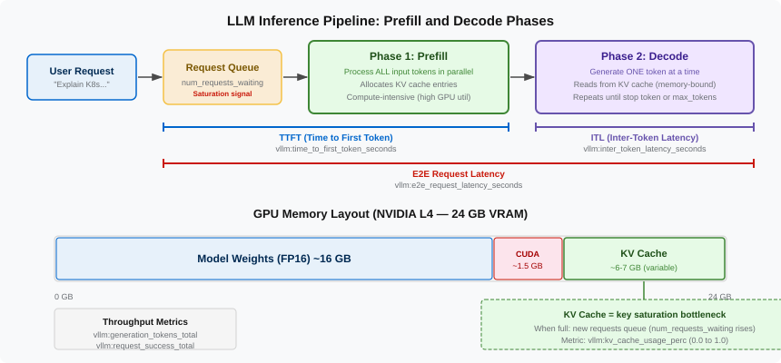

LLM Inference Mechanics
Every LLM inference request goes through two distinct computational phases. These phases have different performance characteristics, different resource bottlenecks, and different metrics — which is why monitoring LLM inference is more nuanced than monitoring a traditional request/response API.

Phase 1: Prefill (Prompt Processing)
When your request arrives, the model must first process every token in your input prompt. This is the prefill phase (also called "prompt processing" or "prompt encoding").
All input tokens are processed in parallel as large matrix multiplications — this is what GPUs are built for. The model builds an internal representation of the entire input and produces the first output token.
Key characteristics of prefill:
-
Compute-bound: The GPU processes all input tokens simultaneously. This is massively parallel computation.
-
Duration scales with input length: A 100-token prompt takes roughly 10x longer to prefill than a 10-token prompt.
-
User experience impact: This is the "thinking" pause before the model starts responding. In a streaming API, the user sees nothing during this phase.
The moment the first output token is produced is called Time to First Token (TTFT) — one of the most important metrics for user-perceived responsiveness.
Phase 2: Decode (Auto-regressive Generation)
Once the first token is produced, the model enters the decode phase. It generates output tokens one at a time, where each new token depends on all previous tokens (both the original input and all generated output so far).
Key characteristics of decode:
-
Memory-bound: Each decode step processes only one token, which does not fully utilize the GPU’s compute capacity. The bottleneck shifts to GPU memory bandwidth — reading and writing the KV cache.
-
Duration scales with output length: Generating 500 tokens takes roughly 10x longer than generating 50 tokens.
-
User experience impact: This is the "typing speed" the user sees during streaming. Each token appears at roughly regular intervals.
-
Sequential by nature: Unlike prefill, decode cannot be parallelized across output tokens. Each token depends on the previous one.
Metrics That Map to Each Phase
| Phase | What the User Sees | Key Metric | vLLM Metric Name |
|---|---|---|---|
Prefill |
Waiting (blank screen) |
Time to First Token |
|
Decode |
Text streaming in |
Time Per Output Token |
|
Decode |
Text streaming in |
Inter-Token Latency |
|
Both |
Total wait time |
End-to-End Latency |
|
The relationship: E2E Latency ≈ TTFT + (num_output_tokens × TPOT)
Consider two requests: one with 2000 input tokens and 50 output tokens, another with 50 input tokens and 2000 output tokens. The first request has much higher TTFT (long prefill) but short decode. The second has low TTFT but very long decode. E2E latency is likely higher for the second request because 2000 sequential decode steps usually exceed the prefill cost of 2000 parallel tokens.
The KV Cache: The Hidden Resource Bottleneck
This is arguably the most important concept for understanding AI serving capacity.
During the decode phase, the model needs to "attend" to all previous tokens to generate the next one. The attention mechanism requires two matrices per token per layer — the Key matrix and the Value matrix. Rather than recomputing these from scratch for every decode step, the model caches them. This cached data is the KV cache.
GPU Memory Layout
Consider our lab setup — Granite 3.1 8B Instruct on an NVIDIA L4:
| Component | Size | Notes |
|---|---|---|
Model Weights (FP16) |
~16 GB |
Fixed: 8B parameters × 2 bytes, loaded once |
CUDA / Framework Overhead |
~1-1.5 GB |
Fixed: CUDA runtime, PyTorch context, vLLM buffers |
KV Cache |
~6-7 GB |
Variable: grows with concurrent requests and sequence length |
The KV cache is what limits how many requests a model can process concurrently:
-
Each concurrent request with a 4096-token context uses ~614 MB of KV cache at FP16
-
Maximum concurrent requests before queuing: ~6-7 GB / 614 MB ≈ 10-11 requests
-
The 12th request must wait in a queue until someone else’s request finishes and frees KV cache
That is a remarkably small number.
With just 11 concurrent users, additional requests must queue.
This is exactly what the vllm:num_requests_waiting metric measures — and it is the single most important signal for understanding whether your model server is saturated.
The max-model-len Tradeoff
Halving the context length roughly doubles your concurrency capacity:
-
At
--max-model-len=4096: ~614 MB per request, ~10-11 concurrent requests -
At
--max-model-len=2048: ~307 MB per request, ~21 concurrent requests
In production, this is a capacity planning decision driven by your actual use case — shorter context windows allow more concurrency, but limit what users can do with the model.
PagedAttention: Making the Most of GPU Memory
vLLM uses a technique called PagedAttention that manages KV cache like an operating system manages virtual memory:
-
Divides GPU memory into fixed-size pages (blocks)
-
Allocates pages to requests on demand as they generate more tokens
-
Frees pages immediately when a request completes
-
Can share pages between requests with common prefixes
This is more efficient than pre-allocating a fixed block per request, but it is still bounded by total GPU memory.
The metric vllm:kv_cache_usage_perc tells you what fraction of the paged cache is currently allocated — when it approaches 100%, you are running out of room.
Key Takeaway
When you see vllm:kv_cache_usage_perc at 85%, it means 85% of the available KV cache pages are allocated to active requests.
The remaining 15% is all you have for new requests.
If this number stays near 100% and vllm:num_requests_waiting is climbing, you need to either reduce concurrent requests, reduce max sequence length, or add more GPU capacity.